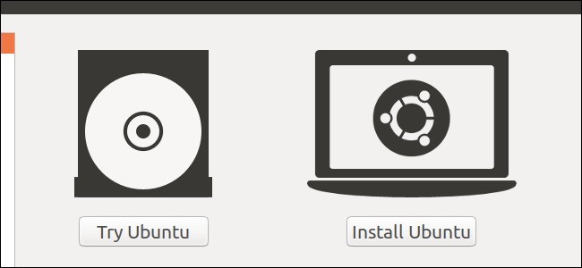
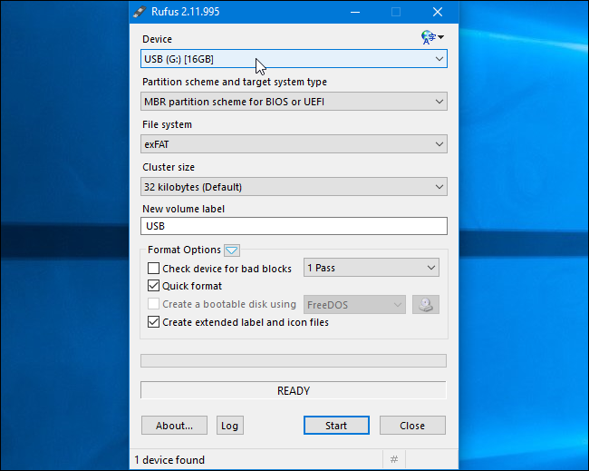
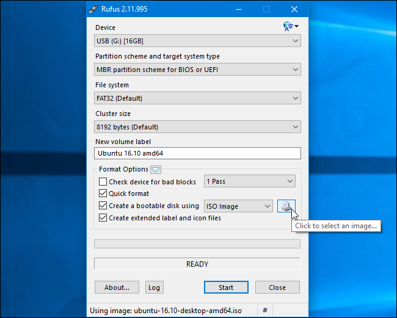
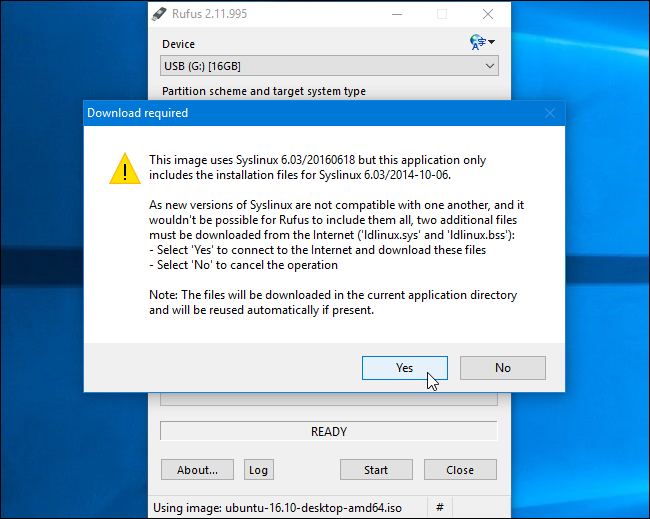
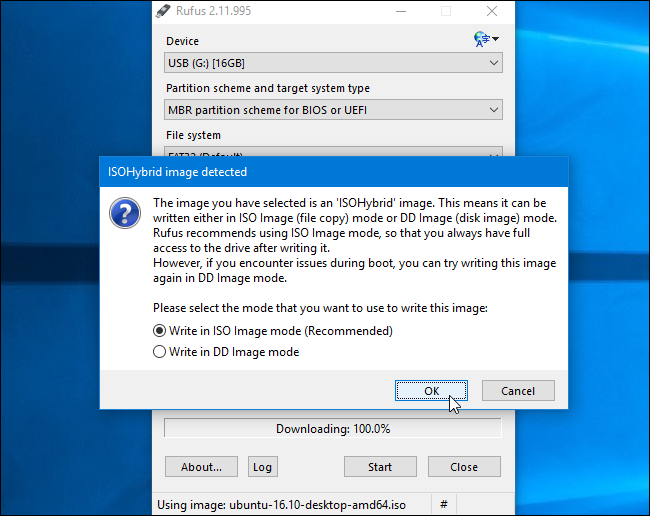
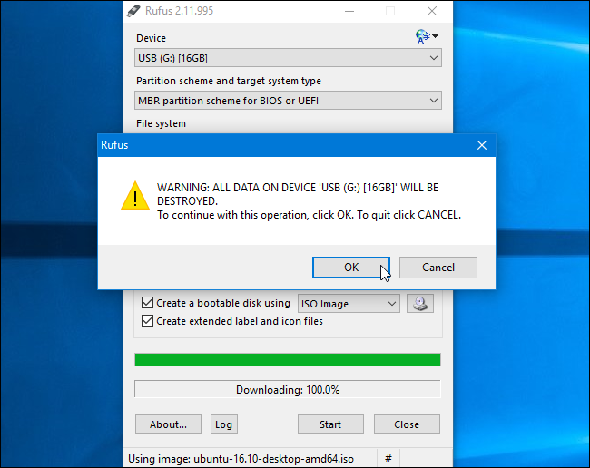
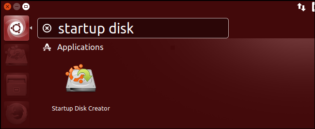
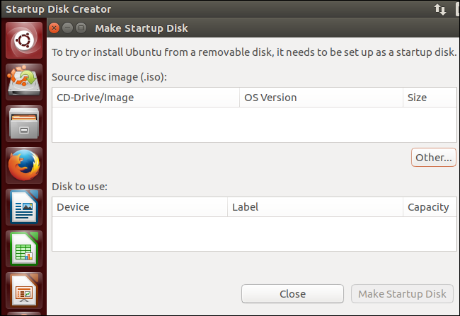

How-To Geek
How to Create a Bootable Linux USB Flash Drive, the Easy Way

A bootable USB drive is the best way to install or try Linux. But most Linux distributions—like Ubuntu—only offer an ISO disc image file for download. You’ll need a third-party tool to turn that ISO file into a bootable USB drive.
You’ll need to download an ISO file to do this—we’re going to use Ubuntu in our example, but this should work for quite a few different Linux distributions. Head to Ubuntu’s download page and download the version of Ubuntu you want—either the stable “Long Term Service” release or the current release. If you’re not sure which one to download, we recommend the LTS release.
Below, we’ll show you how to turn this ISO into a bootable flash drive on both Windows or an existing Linux system.
![]()
NOTE: This process creates a traditional live USB drive. When you run it, none of your chances (like installed programs or created files) will be saved for the next time you run it. For installing Linux to your PC, this is fine—but if you want a live USB that keeps your changes so you can use it regularly on different computers, you’ll want to check out these instructions instead.
How to Create a Bootable USB Drive on Windows
There are many tools that can do this job for you, but we recommend a free program called Rufus—it’s faster and more reliable than many of the other tools you’ll see recommended, including UNetbootin.
Download Rufus and run it on your Windows PC. The tool will open immediately—you don’t even have to install it.
Connect a USB drive with at least 2GB of free space to your Windows PC (this may vary depending on your distribution of choice). The contents of this drive will be erased, so back up any important files on the drive first. Click the “Device” box in Rufus and ensure your connected drive is selected.

If the “Create a bootable disk using” option is grayed out, click the “File System” box and select “FAT32”.
Activate the “Create a bootable disk using” checkbox, click the button to the right of it, and select your downloaded ISO file.

Once you’ve selected the correct options, click the “Start” button to begin creating the bootable drive.
You may be told you need newer SysLinux files. Just click the “Yes” button and Rufus will automatically download them for you.

Rufus will ask how you want to write the image. Just select the default option—“Write in ISO Image Mode (Recommended)”—and click “OK”.

You’ll be warned that all data on the USB drive will be erased. Click “OK” to continue if the drive has no important data on it. (If you forgot to back up your data, click “Cancel”, back up the data on the USB drive, and then run Rufus again.)

![]()
Rufus will create the bootable USB drive. You can click “Close” to close Rufus when it’s done.
Next, restart your computer and boot from the USB drive using these instructions. You can also take it to another computer and boot Ubuntu from the USB drive on that computer.
How to Create a Bootable USB Drive on Ubuntu
If you’re already using Ubuntu, you don’t need to do this from Windows. Just open the Dash and search for the “Startup Disk Creator” application, which is included with Ubuntu.

Provide a downloaded Ubuntu ISO file, connect a USB drive, and the tool will create a bootable Ubuntu USB drive for you.

Many other distributions have their own similar tools built-in, so you’ll have to check and see what your particular distribution has available.
-
I would also suggest Linux Live USB (lili) as it's pretty easy and straightforward with clean language. It allows also to create persistent USB drives so that you can run the Linux Distro and save info to it.
-
Excellent article and service being provided by HowToGeek.Since Microsoft, clearly, has decided to abandon its "Windows" Operating System, making it easy for Windows users to move to Linux is most appreciated.
-
Personally I have found YUMI to be more reliable and easier to use. Apart from what is described here it also allows you to add a whole lot of bootable options to the flash drive.
-
Use YUMI.exe, it is far BETTER as you can USE actual big pendrives for other things too and have several liveISO together including repairing ones that are even good tools for MS WOS users.
![]()
![]()
![]()
![]()
![]()
![]()
![]()
![]()
![]()
Rufus can delete any other files saved in the USB drive. But YUMI s also good for this & it does not delete any data in that flash drive.
I would also suggest Linux Live USB (lili) as it's pretty easy and straightforward with clean language. It allows also to create persistent USB drives so that you can run the Linux Distro and save info to it.
Excellent article and service being provided by HowToGeek.Since Microsoft, clearly, has decided to abandon its "Windows" Operating System, making it easy for Windows users to move to Linux is most appreciated.
Personally I have found YUMI to be more reliable and easier to use. Apart from what is described here it also allows you to add a whole lot of bootable options to the flash drive.
Use YUMI.exe, it is far BETTER as you can USE actual big pendrives for other things too and have several liveISO together including repairing ones that are even good tools for MS WOS users.